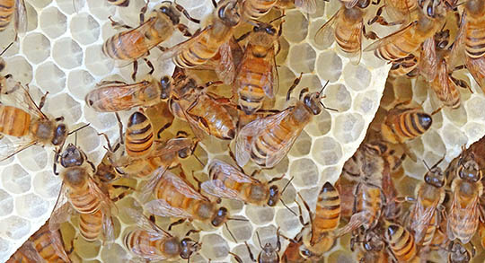
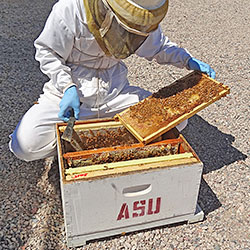
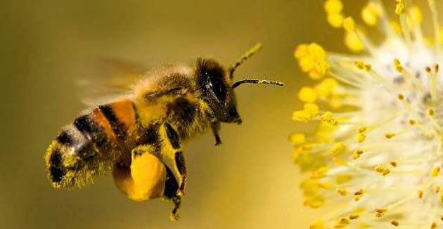

![]()
ABEJAS |
 |
||||
|
Las abejas más conocidas son las abejas melíferas, responsables de producir la miel que conocemos. Sin embargo, existen cerca de 4.000 tipos de abejas distribuidas en todo el mundo. El papel de las abejas es muy importante, pues son las responsables de la polinización de miles de especies vegetales. Gracias a este proceso, las plantas son capaces de reproducirse y sobrevivir, de ahí la importancia de las abejas. Las Naciones Unidas(ONU) ha declarado el 20 De Mayo Dia Mundial de las Abejas Las abejas son unos insectos extremadamente sociables que viven en colonias que se establecen en forma de enjambres y en los que se organizan en una estricta jerarquía de tres rangos sociales: la abeja reina, los zánganos y las abejas obreras. Habitan en todos los continentes de la Tierra excepto en la Antártida, y se trata de uno de los insectos más antiguos, del que se sabe, puebla nuestro planeta desde hace más de de 30 millones de años. Se conocen más de 20.000 subespecies distintas de abeja divididas en 7 familias reconocidas. |
|||||
¿Cuanto conoces de las Abejas? Aqui, hemos preparado esta guía para que conozcas de ellas. ¡ |
|||||
|  | LA VIDA EN LA COLONIA DE LAS ABEJAS La vida en colonia es completamente dependiente de la época del año. Las colonias de las abejas de miel pueden obtener todos sus recursos de las flores. Como resultado, el ciclo de vida de la colonia sigue el ciclo de vida de las plantas con flores en el ambiente. Cada primavera las abejas comienzan a construir su fuerza de trabajo para prepararse para la gran floración de la primavera. En el verano, las abejas aumentan la recolección de recursos alcanzando su pico de actividad. En el otoño, las abejas comienzan a recolectar más lentamente conforme las temperaturas empiezan a enfriarse y las flores se vuelven menos abundantes. |
||||
|  | ¿POR QUE ESTAN DESPARECIENDO? Las abejas son sorprendentes. Tienen su propio lenguaje y hacen mucho por el ecosistema. Muchas plantas nativas – que crecen en tu área – y cultivos de los que dependes para alimentarte requieren de la polinización de las abejas. Beekeeper in a white protective suit and hood examines a panel from a bee colony. Apicultor, Cahit Ozturk, en el laboratorio de abejas de la Universidad del Estado de Arizona examinando un panel de una colmena de abejas. Imagen por CJ Kazilek. Recientemente, los apicultores en los Estados Unidos y Europa comenzaron a preocuparse sobre una inusual pérdida de colmenas de abejas. Los científicos han descubierto desde entonces varios factores relacionados con la apicultura moderna que contribuyen a este fenómeno. En el fondo, no solo es una causa, sino una combinación de factores que están impactando la sobrevivencia de las abejas. | ||||
|  | ¿A QUE NOS AYUDAN?Como bien dijo Albert Einstein, las abejas son muy importantes para el desarrollo del hombre ya que sin ellas, el 60% de las frutas y verduras que hoy consumimos desaparecerían al no ser polinizadas. De las 100 especies de cultivos que abastecen el 90% de los alimentos del mundo, las abejas polinizan más del 70% de ellos. Además, polinizan más de 25.000 especies de plantas con flores. Sin estos insectos la actividad agrícola prácticamente desaparecería, lo que dejaría a muchas familias sin una fuente de ingresos. |
||||